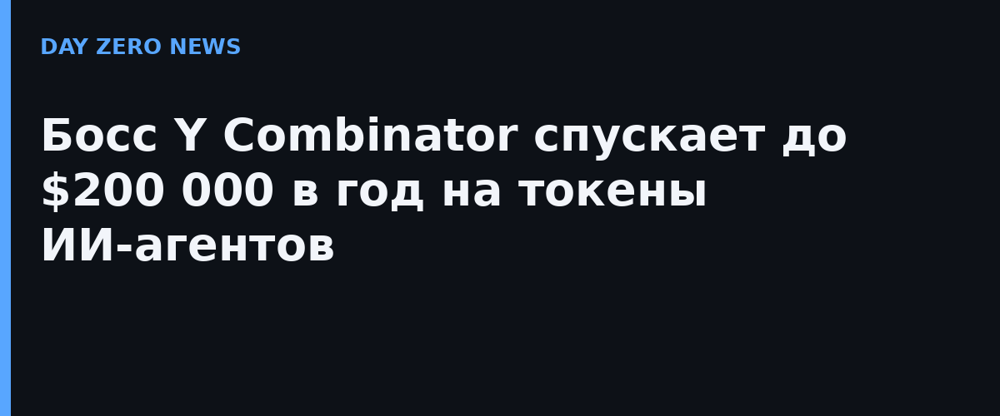

В подкасте The Builders журналиста Уолтера Айзексона глава Y Combinator Гарри Тан назвал цену своего увлечения: «Я трачу примерно от $100 000 до $200 000 в год на токены». Речь об API-расходах на ИИ-агентов, которые помогают ему в рабочих проектах, программировании и даже в личных делах. Отдельного официального анонса компании здесь нет — это личное признание самого Тана в интервью, которое выложили 3 ноября.
Масштаб допуска впечатляет и слегка пугает: по словам Тана, его агент «прочитал всю мою почту и весь Dropbox, все мои заметки в Apple Notes — даже мои терапевтические записи за 20 лет». Тан описывает это как «Джимини Крикет на плече»: система знает о тебе всё, бега вперёд и подсказывает, что ты мог упустить. Для канала, который следит за тем, как агентам доверяют память и ключи, это учебный пример сразу с двух сторон: польза очевидна, а поверхность атаки — вся цифровая жизнь человека целиком.
Тан не прячет инструменты: на GitHub лежит его набор из 23 навыков для Claude Code под названием gstack — он выложил его, чтобы показать, на что способны агенты. А сам Y Combinator внутренне «перестраивает процессы» вокруг агента по имени Stray Light: у того есть характер и «мозг компании» — контекст обо всех основателях, когда-либо прошедших через акселератор, и обо всех письмах, когда-либо присланных в YC.
При этом сам Тан называет свои расходы «безумной привилегией, которую не все могут себе позволить», и считает главный тормоз — цену: «сейчас это слишком дорого». Он всерьёз верит, что персональные ИИ-агенты станут массовыми, как только стоимость упадёт, — но мечтает об агенте, которым управляешь ты сам, а не крупная корпорация с бесплатным сервисом.
Комментарий практикующего безопасника тут лишний: доступ агента к почте, облаку и личным заметкам на двадцать лет вперёд — это не фича, а один удачный prompt injection от большой беды. Если личный «Джимини Крикет» читает ваши терапевтические записи, он же их и потеряет — первым.